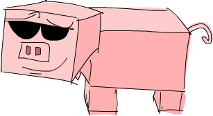

来看看几种 Monad
Table of Contents
1 来看看几种 Monad
当我们第一次谈到 Functor的时候，我们了解到他是一个抽象概念，代表是一种可以被 map over的值。然后我们再将其概念提升到 Applicative Functor，他代表一种带有 context 的型态，我们可以用函数操作他而且同时还保有他的 context。
在这一章，我们会学到 Monad，基本上他是一种加强版的 Applicative Functor，正如 Applicative Functor 是 Functor 的加强版一样。

我们介绍到 Functor 是因为我们观察到有许多型态都可以被 function 给 map over，了解到这个目的，便抽象化了 Functor 这个 typeclass出来。但这让我们想问：如果给定一个 a -> b 的函数以及 f a 的型态，我们要如何将函数 map over 这个型态而得到 f b ？我们知道要如何map over Maybe a ， [a] 以及 IO a 。我们甚至还知道如何用 a -> b map over r -> a ，并且会得到 r -> b 。要回答这个问题，我们只需要看 fmap 的型态就好了：
fmap :: (Functor f) => (a -> b) -> f a -> f b
然后只要针对 Functor instance 撰写对应的实作。
之后我们又看到一些可以针对 Functor 改进的地方，例如 a -> b 也被包在一个
Functor value 里面呢？像是 Just (*3) ，我们要如何 apply Just 5 给他？如果我们不要 apply Just 5 而是 Nothing 呢？甚至给定 [(*2),(+4)] ，我们要如何
apply 他们到 [1,2,3] 呢？对于此，我们抽象出=Applicative= typeclass，这就是我们想要问的问题：
(<*>) :: (Applicative f) => f (a -> b) -> f a -> f b
我们也看到我们可以将一个正常的值包在一个数据型态中。例如说我们可以拿一个 1
然后把他包成 Just 1 。或是把他包成 [1] 。也可以是一个 I/O action会产生一个
1 。这样包装的 function 我们叫他做 pure 。
如我们说得，一个 applicative value 可以被看作一个有附加 context的值。例如说，
='a'= 只是一个普通的字符，但 Just 'a' 是一个附加了context 的字符。他不是
Char 而是 Maybe Char ，这型态告诉我们这个值可能是一个字符，也可能什么都没有。
来看看 Applicative typeclass 怎样让我们用普通的 function 操作他们，同时还保有 context：
ghci> (*) <$> Just 2 <*> Just 8 Just 16 ghci> (++) <$> Just "klingon" <*> Nothing Nothing ghci> (-) <$> [3,4] <*> [1,2,3] [2,1,0,3,2,1]
所以我们可以视他们为 applicative values， Maybe a 代表可能会失败的
computation， [a] 代表同时有好多结果的 computation (non-deterministic
computation)，而 IO a 代表会有 side-effects 的 computation。
Monad 是一个从 Applicative functors很自然的一个演进结果。对于他们我们主要考量的点是：如果你有一个具有context 的值 m a ，你能如何把他丢进一个只接受普通值
a 的函数中，并回传一个具有 context 的值？也就是说，你如何套用一个型态为 a
-> m b 的函数至 m a ？基本上，我们要求的函数是：
(>>=) :: (Monad m) => m a -> (a -> m b) -> m b
如果我们有一个漂亮的值跟一个函数接受普通的值但回传漂亮的值，那我们要如何要把漂亮的值丢进函数中？这就是我们使用Monad 时所要考量的事情。我们不写成 f a 而写成 m a 是因为 m 代表的是 Monad ，但 monad 不过就是支持 >>= 操作的
applicative functors。 >>= 我们称呼他为 bind。
当我们有一个普通值 a 跟一个普通函数 a -> b ，要套用函数是一件很简单的事。但当你在处理具有 context的值时，就需要多考虑些东西，要如何把漂亮的值喂进函数中，并如何考虑他们的行为，但你将会了解到他们其实不难。
1.1 动手做做看: Maybe Monad

现在对于什么是 Monad 已经有了些模糊的概念，我们来看看要如何让这概念更具体一些。
不意外地， Maybe 是一个 Monad，所以让我们对于他多探讨些，看看是否能跟我们所知的 Monad 概念结合起来。
到这边要确定你了解什么是 Applicatives。如果你知道好几种 ``Applicative`` 的 instance 还有他们代表的意含就更好了，因为 monad 不过就是对 applicative 的概念进行一次升级。
一个 Maybe a 型态的值代表型态为 a 的值而且具备一个可能造成错误的context。而 Just "dharma" 的值代表他不是一个 ="dharma"= 的字串就是字串不见时的
Nothing 。如果你把字串当作计算的结果， Nothing 就代表计算失败了。
当我们把 Maybe 视作 functor，我们其实要的是一个 fmap 来把一个函数针对其中的元素做套用。他会对 Just 中的元素进行套用，要不然就是保留 Nothing 的状态，其代表里面根本没有元素。
ghci> fmap (++"!") (Just "wisdom") Just "wisdom!" ghci> fmap (++"!") Nothing Nothing
或者视为一个 applicative functor，他也有类似的作用。只是 applicative也把函数包了起来。 Maybe 作为一个 applicative functor，我们能用 <*> 来套用一个存在 Maybe 中的函数至包在另外一个 Maybe 中的值。他们都必须是包在 Just 来代表值存在，要不然其实就是 Nothing 。当你在想套用函数到值上面的时候，缺少了函数或是值都会造成错误，所以这样做是很合理的。
ghci> Just (+3) <*> Just 3 Just 6 ghci> Nothing <*> Just "greed" Nothing ghci> Just ord <*> Nothing Nothing
当我们用 applicative 的方式套用函数至 Maybe 型态的值时，就跟上面描述的差不多。过程中所有值都必须是 Just ，要不然结果一定会是 Nothing 。
ghci> max <$> Just 3 <*> Just 6 Just 6 ghci> max <$> Just 3 <*> Nothing Nothing
我们来思考一下要怎么为 Maybe 实作 >>= 。正如我们之前提到的， >>= 接受一个 monadic value，以及一个接受普通值的函数，这函数会回传一个monadic value。
>>= 会帮我们套用这个函数到这个 monadic value。在函数只接受普通值的情况侠，函数是如何作到这件事的呢？要作到这件事，他必须要考虑到monadic value 的
context。
在这个案例中， =>>= 会接受一个 Maybe a 以及一个型态为 a -> Maybe b 的函数。他会套用函数到 Maybe a 。要厘清他怎么作到的，首先我们注意到 Maybe 的
applicative functor 特性。假设我们有一个函数 \x -> Just (x+1) 。他接受一个数字，把他加 1 后再包回 Just 。
ghci> (\x -> Just (x+1)) 1 Just 2 ghci> (\x -> Just (x+1)) 100 Just 101
如果我们喂给函数 1 ，他会计算成 Just 2 。如果我们喂给函数 100 ，那结果便是 Just 101 。但假如我们喂一个 Maybe 的值给函数呢？如果我们把 Maybe
想成一个 applicative functor，那答案便很清楚。如果我们拿到一个 Just ，就把包在 Just 里面的值喂给函数。如果我们拿到一个 Nothing ，我们就说结果是
Nothing 。
我们调用 applyMaybe 而不调用 >>= 。他接受 Maybe a 跟一个回传 Maybe b
的函数，并套用函数至 Maybe a 。
applyMaybe :: Maybe a -> (a -> Maybe b) -> Maybe b applyMaybe Nothing f = Nothing applyMaybe (Just x) f = f x
我们套用一个 infix 函数，这样 Maybe 的值可以写在左边且函数是在右边：
ghci> Just 3 `applyMaybe` \x -> Just (x+1) Just 4 ghci> Just "smile" `applyMaybe` \x -> Just (x ++ " :")"" Just "smile :"" ghci> Nothing `applyMaybe` \x -> Just (x+1) Nothing ghci> Nothing `applyMaybe` \x -> Just (x ++ " :")") Nothing
在上述的范例中，我们看到在套用 applyMaybe 的时候，函数是套用在 Just 里面的值。当我们试图套用到 Nothing ，那整个结果便是 Nothing 。假如函数回传
Nothing 呢？
ghci> Just 3 `applyMaybe` \x -> if x > 2 then Just x else Nothing Just 3 ghci> Just 1 `applyMaybe` \x -> if x > 2 then Just x else Nothing Nothing
这正是我们期待的结果。如果左边的 monadic value 是 Nothing ，那整个结果就是
Nothing 。如果右边的函数是 Nothing ，那结果也会是 Nothing 。这跟我们之前把 Maybe 当作applicative 时，过程中有任何一个 Nothing 整个结果就会是
Nothing 一样。
对于 Maybe 而言，我们已经找到一个方法处理漂亮值的方式。我们作到这件事的同时，也保留了 Maybe 代表可能造成错误的计算的意义。
你可能会问，这样的结果有用吗？由于 applicative functors让我们可以拿一个接受普通值的函数，并让他可以操作具有 context的值，这样看起来 applicative functors 好像比 monad 强。但我们会看到monad 也能作到，因为他只是 applicative functors 的升级版。他们同时也能作到 applicative functors 不能作到的事情。
稍候我们会再继续探讨 Maybe ，但我们先来看看 monad 的 type class。
1.2 Monad type class
正如 functors 有 Functor 这个 type class，而 applicative functors有一个
Applicative 这个 type class，monad 也有他自己的 type class： Monad 他看起来像这样：
class Monad m where return :: a -> m a (>>=) :: m a -> (a -> m b) -> m b (>>) :: m a -> m b -> m b x >> y = x >>= \_ -> y fail :: String -> m a fail msg = error msg

我们从第一行开始看。他说 class Monad m where 。但我们之前不是提到 monad是
applicative functors的加强版吗？不是应该有一个限制说一个型态必须先是一个
applicative functor才可能是一个 monad 吗？像是 class (Applicative m) = >
Monad m where 。他的确应该要有，但当 Haskell被创造的早期，人们没有想到
applicative functor适合被放进语言中，所以最后没有这个限制。但的确每个 monad
都是applicative functor，即使 Monad 并没有这么宣告。
在 Monad typeclass 中定义的第一个函数是 return 。他其实等价于 pure ，只是名字不同罢了。他的型态是=(Monad m) > a -> m a 。他接受一个普通值并把他放进一个最小的 context中。也就是说他把普通值包进一个 monad 里面。他跟
Applicative 里面 pure 函数做的事情一样，所以说其实我们已经认识了 return
。我们已经用过 return 来处理一些 I/O。我们用他来做一些假的 I/O，印出一些值。对于 Maybe 来说他就是接受一个普通值然后包进 Just 。
提醒一下：``return`` 跟其他语言中的 ``return`` 是完全不一样的。 他并不是结束一个函数的执行，他只不过是把一个普通值包进一个 context 里面。

接下来定义的函数是 bind: >>= 。他就像是函数套用一样，只差在他不接受普通值，他是接受一个 monadic value（也就是具有 context的值）并且把他喂给一个接受普通值的函数，并回传一个 monadic value。
接下来，我们定义了 >> 。我们不会介绍他，因为他有一个事先定义好的实作，基本上我们在实作 Monad typeclass 的时候都不会去理他。
最后一个函数是 fail 。我们通常在我们程序中不会具体写出来。他是被Haskell 用在处理语法错误的情况。我们目前不需要太在意 fail 。
我们知道了 Monad typeclass 长什么样子，我们来看一下 Maybe 的 Monad
instance。
instance Monad Maybe where return x = Just x Nothing >>= f = Nothing Just x >>= f = f x fail _ = Nothing
return 跟 pure 是等价的。这没什么困难的。我们跟我们在定义 Applicative
的时候做一样的事，只是把他用 Just 包起来。
>>= 跟我们的 applyMaybe 是一样的。当我们将 Maybe a 塞给我们的函数，我们保留住context，并且在输入是 Nothing 的时候回传 Nothing 。毕竟当没有值的时候套用我们的函数是没有意义的。当输入是 Just 的时候则套用 f 并将他包在 Just 里面。
我们可以试着感觉一下 Maybe 是怎样表现成Monad的。
ghci> return "WHAT" :: Maybe String Just "WHAT" ghci> Just 9 >>= \x -> return (x*10) Just 90 ghci> Nothing >>= \x -> return (x*10) Nothing
第一行没什么了不起，我们已经知道 return 就是 pure 而我们又对 Maybe 操作过 pure 了。至于下两行就比较有趣点。
留意我们是如何把 Just 9 喂给 \x -> return (x*10) 。在函数中 x=绑定到 =9
。他看起好像我们能不用 pattern matching 的方式就从 Maybe=中抽取出值。但我们并没有丧失掉 =Maybe 的 context，当他是 Nothing 的时候， >>= 的结果也会是
Nothing 。
1.3 走钢索

我们已经知道要如何把 Maybe a 喂进 a -> Maybe b 这样的函数。我们可以看看我们如何重复使用 >>= 来处理多个 Maybe a 的值。
首先来说个小故事。皮尔斯决定要辞掉他的工作改行试着走钢索。他对走钢索蛮在行的，不过仍有个小问题。就是鸟会停在他拿的平衡竿上。他们会飞过来停一小会儿，然后再飞走。这样的情况在两边的鸟的数量一样时并不是个太大的问题。但有时候，所有的鸟都会想要停在同一边，皮尔斯就失去了平衡，就会让他从钢索上掉下去。
我们这边假设两边的鸟差异在三个之内的时候，皮尔斯仍能保持平衡。所以如果是右边有一只，左边有四只的话，那还撑得住。但如果左边有五只，那就会失去平衡。
我们要写个程序来仿真整个情况。我们想看看皮尔斯究竟在好几只鸟来来去去后是否还能撑住。例如说，我们想看看先来了一只鸟停在左边，然后来了四只停在右边，然后左边那只飞走了。之后会是什么情形。
我们用一对整数来代表我们的平衡竿状态。头一个位置代表左边的鸟的数量，第二个位置代表右边的鸟的数量。
type Birds = Int type Pole = (Birds,Birds)
由于我们用整数来代表有多少只鸟，我们便先来定义 Int 的同义型态，叫做 Birds
。然后我们把 (Birds, Birds) 定义成 Pole 。
接下来，我们定义一个函数他接受一个数字，然后把他放在竿子的左边，还有另外一个函数放在右边。
landLeft :: Birds -> Pole -> Pole landLeft n (left,right) = (left + n,right) landRight :: Birds -> Pole -> Pole landRight n (left,right) = (left,right + n)
我们来试着执行看看：
ghci> landLeft 2 (0,0) (2,0) ghci> landRight 1 (1,2) (1,3) ghci> landRight (-1) (1,2) (1,1)
要仿真鸟飞走的话我们只要给定一个负数就好了。 由于这些操作是接受 Pole 并回传
Pole ， 所以我们可以把函数串在一起。
ghci> landLeft 2 (landRight 1 (landLeft 1 (0,0))) (3,1)
当我们喂 (0,0) 给 landLeft 1 时，我们会得到 (1,0) 。接着我们仿真右边又停了一只鸟，状态就变成 (1,1) 。最后又有两只鸟停在左边，状态变成 (3,1) 。我们这边的写法是先写函数名称，然后再套用参数。但如果先写 pole再写函数名称会比较清楚，所以我们会想定义一个函数
x -: f = f x
我们能先套用参数然后再写函数名称：
ghci> 100 -: (*3) 300 ghci> True -: not False ghci> (0,0) -: landLeft 2 (2,0)
有了这个函数，我们便能写得比较好读一些：
ghci> (0,0) -: landLeft 1 -: landRight 1 -: landLeft 2 (3,1)
这个范例跟先前的范例是等价的，只不过好读许多。很清楚的看出我们是从 (0,0) 开始，然后停了一只在左边，接着右边又有一只，最后左边多了两只。
到目前为止没什么问题，但如果我们要停 10 只在左边呢？
ghci> landLeft 10 (0,3) (10,3)
你说左边有 10 只右边却只有 3只？那不是早就应该掉下去了？这个例子太明显了，如果换个比较不明显的例子。
ghci> (0,0) -: landLeft 1 -: landRight 4 -: landLeft (-1) -: landRight (-2) (0,2)
表面看起来没什么问题，但如果你仔细看的话，有一瞬间是右边有四只，但左边没有鸟。要修正这个错误，我们要重新查看 landLeft 跟 landRight 。我们其实是希望这些函数产生失败的情况。那就是在维持平衡的时候回传新的pole，但失败的时候告诉我们失败了。这时候 Maybe 就刚刚好是我们要的context 了。我们用 Maybe 重新写一次：
landLeft :: Birds -> Pole -> Maybe Pole landLeft n (left,right) | abs ((left + n) - right) < 4 = Just (left + n, right) | otherwise = Nothing landRight :: Birds -> Pole -> Maybe Pole landRight n (left,right) | abs (left - (right + n)) < 4 = Just (left, right + n) | otherwise = Nothing
现在这些函数不回传 Pole 而回传 Maybe Pole 了。他们仍接受鸟的数量跟旧的的
pole，但他们现在会检查是否有太多鸟会造成皮尔斯失去平衡。我们用 guards来检查是否有差异超过三的情况。如果没有，那就包一个在 Just 中的新的pole，如果是，那就回传 Nothing 。
再来执行看看：
ghci> landLeft 2 (0,0) Just (2,0) ghci> landLeft 10 (0,3) Nothing
一如预期，当皮尔斯不会掉下去的时候，我们就得到一个包在 Just 中的新pole。当太多鸟停在同一边的时候，我们就会拿到 Nothing 。这样很棒，但我们却不知道怎么把东西串在一起了。我们不能做 landLeft 1 (landRight 1 (0,0)) ，因为当我们对
(0,0) 使用 landRight 1 时，我们不是拿到 Pole 而是拿到 Maybe Pole 。
landLeft 1 会拿到 Pole 而不是拿到 Maybe Pole 。
我们需要一种方法可以把拿到的 Maybe Pole 塞到拿 Pole 的函数中，然后回传
Maybe Pole 。而我们有 >>= ，他对 Maybe 做的事就是我们要的
ghci> landRight 1 (0,0) >>= landLeft 2 Just (2,1)
landLeft 2 的型态是 Pole -> Maybe Pole 。我们不能喂给他 Maybe Pole 的东西。而 landRight 1 (0,0) 的结果就是 Maybe Pole ，所以我们用 >>= 来接受一个有 context 的值然后拿给 landLeft 2 。 >>= 的确让我们把 Maybe 当作有
context 的值，因为当我们丢 Nothing 给 landLeft 2 的时候，结果会是
Nothing 。
ghci> Nothing >>= landLeft 2 Nothing
这样我们可以把这些新写的用 >>= 串在一起。让 monadic value可以喂进只吃普通值的函数。
来看看些例子：
ghci> return (0,0) >>= landRight 2 >>= landLeft 2 >>= landRight 2 Just (2,4)
我们最开始用 return 回传一个 pole 并把他包在 Just 里面。我们可以像往常套用 landRight 2 ，不过我们不那么做，我们改用 >>= 。 Just (0,0) 被喂到
landRight 2 ，得到 Just (0,2) 。接着被喂到 landLeft 2 ，得到 Just
(2,2) 。
还记得我们之前引入失败情况的例子吗？
ghci> (0,0) -: landLeft 1 -: landRight 4 -: landLeft (-1) -: landRight (-2) (0,2)
之前的例子并不会反应失败的情况。但如果我们用 >>= 的话就可以得到失败的结果。
ghci> return (0,0) >>= landLeft 1 >>= landRight 4 >>= landLeft (-1) >>= landRight (-2) Nothing
正如预期的，最后的情形代表了失败的情况。我们再进一步看看这是怎么产生的。首先
return 把 (0,0) 放到一个最小的 context 中，得到 Just (0,0) 。然后是
Just (0.0) >>= landLeft 1 。由于 Just (0,0) 是一个 Just 的值。
landLeft 1 被套用至 (0,0) 而得到 Just (1,0) 。这反应了我们仍保持在平衡的状态。接着是 Just (1,0) >> landright 4= 而得到了 Just (1,4) 。距离不平衡只有一步之遥了。他又被喂给 landLeft (-1) ，这组合成了 landLeft (-1)
(1,4) 。由于失去了平衡，我们变得到了 Nothing 。而我们把 Nothing 喂给
landRight (-2) ，由于他是 Nothing ，也就自动得到了 Nothing 。
如果只把 Maybe 当作 applicative用的话是没有办法达到我们要的效果的。你试着做一遍就会卡住。因为applicative functor 并不允许 applicative value之间有弹性的交互。他们最多就是让我们可以用 applicative style来传递参数给函数。applicative
operators 能拿到他们的结果并把他用applicative 的方式喂给另一个函数，并把最终的 applicative值放在一起。但在每一步之间并没有太多允许我们作手脚的机会。而我们的范例需要每一步都倚赖前一步的结果。当每一只鸟降落的时候，我们都会把前一步的结果拿出来看看。好知道结果到底应该成功或失败。
我们也能写出一个函数，完全不管现在究竟有几只鸟停在竿子上，只是要害皮尔斯滑倒。我们可以称呼这个函数叫做 banana ：
banana :: Pole -> Maybe Pole banana _ = Nothing
现在我们能把香蕉皮串到我们的过程中。他绝对会让遇到的人滑倒。他完全不管前面的状态是什么都会产生失败。
ghci> return (0,0) >>= landLeft 1 >>= banana >>= landRight 1 Nothing
Just (1,0) 被喂给 banana ，而产生了 Nothing ，之后所有的结果便都是
Nothing 了。
要同样表示这种忽略前面的结果，只注重眼前的 monadic value的情况，其实我们可以用 >> 来表达。
(>>) :: (Monad m) => m a -> m b -> m b m >> n = m >>= \_ -> n
一般来讲，碰到一个完全忽略前面状态的函数，他就应该只会回传他想回传的值而已。但碰到Monad，他们的 context 还是必须要被考虑到。来看一下 >> 串接 Maybe 的情况。
ghci> Nothing >> Just 3 Nothing ghci> Just 3 >> Just 4 Just 4 ghci> Just 3 >> Nothing Nothing
如果你把 >> 换成 >>= \_ -> ，那就很容易看出他的意思。
我们也可以把 banana 改用 >> 跟 Nothing 来表达：
ghci> return (0,0) >>= landLeft 1 >> Nothing >>= landRight 1 Nothing
我们得到了保证的失败。
我们也可以看看假如我们故意不用把 Maybe 视为有 context的值的写法。他会长得像这样：
routine :: Maybe Pole routine = case landLeft 1 (0,0) of Nothing -> Nothing Just pole1 -> case landRight 4 pole1 of Nothing -> Nothing Just pole2 -> case landLeft 2 pole2 of Nothing -> Nothing Just pole3 -> landLeft 1 pole3

左边先停了一只鸟，然后我们停下来检查有没有失败。当失败的时候我们回传
Nothing 。当成功的时候，我们在右边停一只鸟，然后再重复前面做的事情。把这些琐事转换成 >>= 证明了 Maybe Monad 的力量，可以省去我们不少的时间。
注意到 Maybe 对 >>= 的实作，他其实就是在做碰到 Nothing 就会传 Nothing
，碰到正确值就继续用 Just 传递值。
在这个章节中，我们看过了好几个函数，也见识了用 Maybe monad来表示失败的
context 的力量。把普通的函数套用换成了 >>= ，让我们可以轻松地应付可能会失败的情况，并帮我们传递context。这边的 context 就代表失败的可能性，当我们套用函数到 context的时候，就代表考虑进了失败的情况。
1.4 do 表示法
Monad 在 Haskell中是十分重要的，所以我们还特别为了操作他设置了特别的语法：
do 表示法。我们在介绍 I/O 的时候已经用过 do 来把小的 I/O action串在一起了。其实 do 并不只是可以用在 IO ，他可以用在任何 monad上。他的原则是简单明了，把 monadic value 串成一串。我们这边来细看 do 是如何使用，以及为什么我们十分倚赖他。
来看一下熟悉的例子：
ghci> Just 3 >>= (\x -> Just (show x ++ "!")) Just "3!"
你说这没什么了不起，不过就是把 monadic value 喂给一个函数罢了。其中 x 就指定成 3 。也从 monadic value 变成了普通值。那如果我们要在 lambda中使用 >>=
呢？
ghci> Just 3 >>= (\x -> Just "!" >>= (\y -> Just (show x ++ y))) Just "3!"
我们嵌一个 >>= 在另外一个 >>= 中。在外层的 lambda，我们把 Just "!" 喂给
\y -> Just (show x ++ y) 。在内层的 lambda， y 被指定成 ="!"= 。 x 仍被指定成 3 ，是因为我们是从外层的 lambda取值的。这些行为让我们回想到下列式子：
ghci> let x = 3; y = "!" in show x ++ y "3!"
差别在于前述的值是 monadic，具有失败可能性的context。我们可以把其中任何一步代换成失败的状态：
ghci> Nothing >>= (\x -> Just "!" >>= (\y -> Just (show x ++ y))) Nothing ghci> Just 3 >>= (\x -> Nothing >>= (\y -> Just (show x ++ y))) Nothing ghci> Just 3 >>= (\x -> Just "!" >>= (\y -> Nothing)) Nothing
第一行中，把 Nothing 喂给一个函数，很自然地会回传 Nothing 。第二行里，我们把 Just 3 喂给一个函数，所以 x 就成了 3 。但我们把 Nothing 喂给内层的 lambda 所有的结果就成了 Nothing ，这也进一步使得外层的 lambda 成了
Nothing=。这就好比我们在=let expression 中来把值指定给变量一般。只差在我们这边的值是 monadic value。
要再说得更清楚点，我们来把 script 改写成每行都处理一个 Maybe ：
foo :: Maybe String foo = Just 3 >>= (\x -> Just "!" >>= (\y -> Just (show x ++ y)))
为了摆脱这些烦人的 lambda，Haskell 允许我们使用 do 表示法。他让我们可以把先前的程序写成这样：
foo :: Maybe String foo = do x <- Just 3 y <- Just "!" Just (show x ++ y)

这看起来好像让我们不用在每一步都去检查 Maybe 的值究竟是 Just 或 Nothing
。这蛮方便的，如果在任何一个步骤我们取出了 Nothing 。那整个 do 的结果就会是 Nothing 。我们把整个责任都交给 >>= ，他会帮我们处理所有 context 的问题。这边的 do 表示法不过是另外一种语法的形式来串连所有的 monadic value 罢了。
在 do expression 中，每一行都是一个 monadic value。要检查处理的结果的话，就要使用 <- 。如果我们拿到一个 Maybe String ，并用 <- 来绑定给一个变量，那个变量就会是一个 String ，就像是使用 >>= 来将 monadic value 带给 lambda
一样。至于=do= expression 中的最后一个值，好比说 Just (show x ++ y) ，就不能用 <- 来绑定结果，因为那样的写法当转换成 >>= 的结果时并不合理。他必须要是所有 monadic value黏起来后的总结果，要考虑到前面所有可能失败的情形。
举例来说，来看看下面这行：
ghci> Just 9 >>= (\x -> Just (x > 8)) Just True
由于 >>= 左边的参数是一个 Just 型态的值，当 lambda 被套用至 9 就会得到
Just True 。如果我们重写整个式子，改用 do 表示法：我们会得到：
marySue :: Maybe Bool marySue = do x <- Just 9 Just (x > 8)
如果我们比较这两种写法，就很容易看出为什么整个 monadic value的结果会是在 do
表示法中最后一个 monadic value的值。他串连了全面所有的结果。
我们走钢索的仿真程序也可以改用 do 表示法重写。 landLeft 跟 landRight 接受一个鸟的数字跟一个竿子来产生一个包在 Just 中新的竿子。而在失败的情况会产生 Nothing 。我们使用 >>= 来串连所有的步骤，每一步都倚赖前一步的结果，而且都带有可能失败的context。这边有一个范例，先是有两只鸟停在左边，接着有两只鸟停在右边，然后是一只鸟停在左边：
routine :: Maybe Pole routine = do start <- return (0,0) first <- landLeft 2 start second <- landRight 2 first landLeft 1 second
我们来看看成功的结果：
ghci> routine Just (3,2)
当我们要把这些 routine 用具体写出的 >>= ，我们会这样写： return (0,0) >>=
landLeft 2 ，而有了 do 表示法，每一行都必须是一个 monadic value。所以我们清楚地把前一个 Pole 传给 landLeft 跟 landRight 。如果我们查看我们绑定
Maybe 的变量， start 就是 (0,0) ，而 first 就会是 (2,0) 。
由于 do 表示法是一行一行写，他们会看起来很像是命令式的写法。但实际上他们只是代表串行而已，每一步的值都倚赖前一步的结果，并带着他们的context 继续下去。
我们再重新来看看如果我们没有善用 Maybe 的 monad 性质的程序：
routine :: Maybe Pole routine = case Just (0,0) of Nothing -> Nothing Just start -> case landLeft 2 start of Nothing -> Nothing Just first -> case landRight 2 first of Nothing -> Nothing Just second -> landLeft 1 second
在成功的情形下， Just (0,0) 变成了 start ， 而 landLeft 2 start 的结果成了 first 。
如果我们想在 do 表示法里面对皮尔斯丢出香蕉皮，我们可以这样做：
routine :: Maybe Pole routine = do start <- return (0,0) first <- landLeft 2 start Nothing second <- landRight 2 first landLeft 1 second
当我们在 do 表示法写了一行运算，但没有用到 <- 来绑定值的话，其实实际上就是用了 >> ，他会忽略掉计算的结果。我们只是要让他们有序，而不是要他们的结果，而且他比写成 _ <- Nothing 要来得漂亮的多。
你会问究竟我们何时要使用 do 表示法或是 >>= ，这完全取决于你的习惯。在这个例子由于有每一步都倚赖于前一步结果的特性，所以我们使用 >>= 。如果用 do 表示法，我们就必须清楚写出鸟究竟是停在哪根竿子上，但其实每一次都是前一次的结果。不过他还是让我们了解到怎么使用 do 。
在 do 表示法中，我们其实可以用模式匹配来绑定 monadic value，就好像我们在
let 表达式，跟函数参数中使用模式匹配一样。这边来看一个在 do 表示法中使用模式匹配的范例：
justH :: Maybe Char justH = do (x:xs) <- Just "hello" return x
我们用模式匹配来取得 ="hello"= 的第一个字符，然后回传结果。所以 justH 计算会得到 =Just 'h'= 。
如果模式匹配失败怎么办？当定义一个函数的时候，一个模式不匹配就会跳到下一个模式。如果所有都不匹配，那就会造成错误，整个程序就当掉。另一方面，如果在 let
中进行模式匹配失败会直接造成错误。毕竟在 let 表达式的情况下并没有失败就跳下一个的设计。至于在 do 表示法中模式匹配失败的话，那就会调用 fail 函数。他定义在 Monad 的type class 定义猪。他允许在现在的 monad context底下，失败只会造成失败而不会让整个程序当掉。他缺省的实作如下：
fail :: (Monad m) => String -> m a fail msg = error msg
可见缺省的实作的确是让程序挂掉，但在某些考虑到失败的可能性的 Monad（像是
Maybe ）常常会有他们自己的实作。对于 Maybe ，他的实作像是这样：
fail _ = Nothing
他忽略错误消息，并直接回传 Nothing 。所以当在 do 表示法中的 Maybe 模式匹配失败的时候，整个结果就会是 Nothing 。这种方式比起让程序挂掉要好多了。这边来看一下 Maybe 模式匹配失败的范例：
wopwop :: Maybe Char wopwop = do (x:xs) <- Just "" return x
模式匹配的失败，所以那一行的效果相当于一个 Nothing 。我们来看看执行结果：
ghci> wopwop Nothing
这样模式匹配的失败只会限制在我们 monad 的 context中，而不是整个程序的失败。这种处理方式要好多了。
1.5 List Monad

我们已经了解了 Maybe 可以被看作具有失败可能性 context的值，也见识到如何用
>>= 来把这些具有失败考量的值传给函数。在这一个章节中，我们要看一下如何利用
list 的 monadic 的性质来写 non-deterministic 的程序。
我们已经讨论过在把 list 当作 applicatives 的时候他们具有non-deterministic 的性质。像 5 这样一个值是 deterministic的。他只有一种结果，而且我们清楚的知道他是什么结果。另一方面，像 [3,8,9] 这样的值包含好几种结果，所以我们能把他看作是同时具有好几种结果的值。把list 当作 applicative functors 展示了这种特性：
ghci> (*) <$> [1,2,3] <*> [10,100,1000] [10,100,1000,20,200,2000,30,300,3000]
将左边 list 中的元素乘上右边 list 中的元素这样所有的组合全都被放进结果的list 中。当处理 non-determinism的时候，这代表我们有好几种选择可以选，我们也会每种选择都试试看，因此最终的结果也会是一个non-deterministic 的值。只是包含更多不同可能罢了。
non-determinism 这样的 context 可以被漂亮地用 monad来考虑。所以我们这就来看看
list 的 Monad instance 的定义：
instance Monad [] where return x = [x] xs >>= f = concat (map f xs) fail _ = []
return 跟 pure 是做同样的事，所以我们应该算已经理解了 return 的部份。他接受一个值，并把他放进一个最小的一个 context中。换种说法，就是他做了一个只包含一个元素的list。这样对于我们想要操作普通值的时候很有用，可以直接把他包起来变成non-deterministic value。
要理解 >>= 在 list monad的情形下是怎么运作的，让我们先来回归基本。 >>= 基本上就是接受一个有context 的值，把他喂进一个只接受普通值的函数，并回传一个具有 context的值。如果操作的函数只会回传普通值而不是具有 context 的值，那 >>=
在操作一次后就会失效，因为 context 不见了。让我们来试着把一个
non-deterministic value 塞到一个函数中：
ghci> [3,4,5] >>= \x -> [x,-x] [3,-3,4,-4,5,-5]
当我们对 Maybe 使用 >>= ，是有考虑到可能失败的 context。在这边 >>= 则是有考虑到 non-determinism。 [3,4,5] 是一个 non-deterministic value，我们把他喂给一个回传 non-deterministic value 的函数。那结果也会是non-deterministic。而且他包含了所有从 [3,4,5] 取值，套用 \x -> [x,-x] 后的结果。这个函数他接受一个数值并产生两个数值，一个原来的数值与取过负号的数值。当我们用 >>= 来把一个 list 喂给这个函数，所有在 list中的数值都保留了原有的跟取负号过的版本。
x 会针对 list中的每个元素走过一遍。
要看看结果是如何算出来的，只要看看实作就好了。首先我们从 [3,4,5] 开始。然后我们用 lambda 映射过所有元素得到：
[[3,-3],[4,-4],[5,-5]]
lambda 会扫过每个元素，所以我们有一串包含一堆 list 的list，最后我们在把这些 list 压扁，得到一层的 list。这就是我们得到non-deterministic value 的过程。
non-determinism 也有考虑到失败的可能性。 [] 其实等价于 Nothing ，因为他什么结果也没有。所以失败等同于回传一个空的list。所有的错误消息都不用。让我们来看看范例：
ghci> [] >>= \x -> ["bad","mad","rad"] [] ghci> [1,2,3] >>= \x -> [] []
第一行里面，一个空的 list 被丢给 lambda。因为 list没有任何元素，所以函数收不到任何东西而产生空的 list。这跟把 Nothing 喂给函数一样。第二行中，每一个元素都被喂给函数，但所有元素都被丢掉，而只回传一个空的list。因为所有的元素都造成了失败，所以整个结果也代表失败。
就像 Maybe 一样，我们可以用 >>= 把他们串起来：
ghci> [1,2] >>= \n -> ['a','b'] >>= \ch -> return (n,ch) [(1,'a'),(1,'b'),(2,'a'),(2,'b')]

[1,2] 被绑定到 n 而 ['a','b'] 被绑定到 ch 。最后我们用 return
(n,ch) 来把他放到一个最小的 context 中。在这个案例中，就是把 (n,ch) 放到
list 中，这代表最低程度的non-determinism。整套结构要表达的意思就是对于
[1,2] 的每个元素，以及 ['a','b'] 的每个元素，我们产生一个 tuple，每项分别取自不同的 list。
一般来说，由于 return 接受一个值并放到最小的 context中，他不会多做什么额外的东西仅仅是展示出结果而已。
当你要处理 non-deterministic value 的时候，你可以把 list 中的每个元素想做计算路线的一个 branch。
这边把先前的表达式用 do 重写：
listOfTuples :: [(Int,Char)] listOfTuples = do n <- [1,2] ch <- ['a','b'] return (n,ch)
这样写可以更清楚看到 n 走过 [1,2] 中的每一个值，而 ch 则取过
['a','b'] 中的每个值。正如 Maybe 一般，我们从 monadic value中取出普通值然后喂给函数。 >>= 会帮我们处理好一切 context相关的问题，只差在这边的 context
指的是 non-determinism。
使用 do 来对 list操作让我们回想起之前看过的一些东西。来看看下列的片段：
ghci> [ (n,ch) | n <- [1,2], ch <- ['a','b'] ] [(1,'a'),(1,'b'),(2,'a'),(2,'b')]
没错，就是 list comprehension。在先前的范例中， n 会走过 [1,2] 的每个元素，而 ch 会走过 ['a','b'] 的每个元素。同时我们又把 (n,ch) 放进一个 context
中。这跟 list comprehension 的目的一样，只是我们在 list comprehension 里面不用在最后写一个 return 来得到 (n,ch) 的结果。
实际上，list comprehension 不过是一个语法糖。不论是 list comprehension或是用
do 表示法来表示，他都会转换成用 >>= 来做计算。
List comprehension 允许我们 filter我们的结果。举例来说，我们可以只要包含 7
在表示位数里面的数值。
ghci> [ x | x <- [1..50], '7' `elem` show x ] [7,17,27,37,47]
我们用 show 跟 x 来把数值转成字串，然后检查 ='7'= 是否包含在字串里面。要看看 filtering 要如何转换成用 list monad来表达，我们可以考虑使用 guard 函数，还有 MonadPlus 这个 type class。 MonadPlus 这个 type class 是用来针对可以同时表现成 monoid 的monad。下面是他的定义：
class Monad m => MonadPlus m where mzero :: m a mplus :: m a -> m a -> m a
mzero 是其实是 Monoid 中 mempty 的同义词，而 mplus 则对应到 mappend
。因为 list 同时是 monoid 跟 monad，他们可以是 MonadPlus 的instance。
instance MonadPlus [] where mzero = [] mplus = (++)
对于 list 而言， mzero 代表的是不产生任何结果的 non-deterministic value，也就是失败的结果。而 mplus 则把两个 non-deterministic value结合成一个。
guard 这个函数被定义成下列形式：
guard :: (MonadPlus m) => Bool -> m () guard True = return () guard False = mzero
这函数接受一个布林值，如果他是 True 就回传一个包在缺省 context 中的 () 。如果他失败就产生 mzero。
ghci> guard (5 > 2) :: Maybe () Just () ghci> guard (1 > 2) :: Maybe () Nothing ghci> guard (5 > 2) :: [()] [()] ghci> guard (1 > 2) :: [()] []
看起来蛮有趣的，但用起来如何呢？我们可以用他来过滤 non-deterministic 的计算。
ghci> [1..50] >>= (\x -> guard ('7' `elem` show x) >> return x) [7,17,27,37,47]
这边的结果跟我们之前 list comprehension 的结果一致。究竟 guard 是如何办到的？我们先看看 guard 跟 >> 是如何交互：
ghci> guard (5 > 2) >> return "cool" :: [String] ["cool"] ghci> guard (1 > 2) >> return "cool" :: [String] []
如果 guard 成功的话，结果就会是一个空的 tuple。接着我们用 >> 来忽略掉空的
tuple，而呈现不同的结果。另一方面，如果 guard 失败的话，后面的 return 也会失败。这是因为用 >>= 把空的 list喂给函数总是会回传空的 list。基本上
guard 的意思就是：如果一个布林值是=False= 那就产生一个失败状态，不然的话就回传一个基本的 () 。这样计算就可以继续进行。
这边我们把先前的范例用 do 改写：
sevensOnly :: [Int] sevensOnly = do x <- [1..50] guard ('7' `elem` show x) return x
如果我们不写最后一行 return x ，那整个 list 就会是包含一堆空 tuple 的list。
把上述范例写成 list comprehension 的话就会像这样：
ghci> [ x | x <- [1..50], '7' `elem` show x ] [7,17,27,37,47]
所以 list comprehension 的 filtering 基本上跟 guard 是一致的。
1.5.1 A knight's quest
这边来看一个可以用 non-determinism解决的问题。假设你有一个西洋棋盘跟一只西洋棋中的骑士摆在上面。我们希望知道是否这只骑士可以在三步之内移到我们想要的位置。我们只要用一对数值来表示骑士在棋盘上的位置。第一个数值代表棋盘的行，而第二个数值代表棋盘的列。

我们先帮骑士的位置定义一个 type synonym。
type KnightPos = (Int,Int)
假设骑士现在是在 (6,2) 。究竟他能不能够在三步内移动到 (6,1) 呢？你可能会先考虑究竟哪一步是最佳的一步。但不如全部一起考虑吧！要好好利用所谓的
non-determinism。所以我们不是只选择一步，而是选择全部。我们先写一个函数回传所有可能的下一步：
moveKnight :: KnightPos -> [KnightPos] moveKnight (c,r) = do (c',r') <- [(c+2,r-1),(c+2,r+1),(c-2,r-1),(c-2,r+1) ,(c+1,r-2),(c+1,r+2),(c-1,r-2),(c-1,r+2) ] guard (c' `elem` [1..8] && r' `elem` [1..8]) return (c',r')
骑士有可能水平或垂直移动一步或二步，但问题是他们必须要同时水平跟垂直移动。
(c',r') 走过 list 中的每一个元素，而 guard 会保证产生的结果会停留在棋盘上。如果没有，那就会产生一个空的list，表示失败的结果， return (c',r') 也就不会被执行。
这个函数也可以不用 list monad 来写，但我们这边只是写好玩的。下面是一个用
filter 实现的版本：
moveKnight :: KnightPos -> [KnightPos] moveKnight (c,r) = filter onBoard [(c+2,r-1),(c+2,r+1),(c-2,r-1),(c-2,r+1) ,(c+1,r-2),(c+1,r+2),(c-1,r-2),(c-1,r+2) ] where onBoard (c,r) = c `elem` [1..8] && r `elem` [1..8]
两个函数做的都是相同的事，所以选个你喜欢的吧。
ghci> moveKnight (6,2) [(8,1),(8,3),(4,1),(4,3),(7,4),(5,4)] ghci> moveKnight (8,1) [(6,2),(7,3)]
我们接受一个位置然后产生所有可能的移动方式。所以我们有一个non-deterministic
的下一个位置。我们用 >>= 来喂给 moveKnight 。接下来我们就可以写一个三步内可以达到的所有位置：
in3 :: KnightPos -> [KnightPos] in3 start = do first <- moveKnight start second <- moveKnight first moveKnight second
如果你传 (6,2) ，得到的 list会很大，因为会有不同种方式来走到同样的一个位置。我们也可以不用 do 来写：
in3 start = return start >>= moveKnight >>= moveKnight >>= moveKnight
第一次 >>= 给我们移动一步的所有结果，第二次 ~>>=~给我们移动两步的所有结果，第三次则给我们移动三步的所有结果。
用 return 来把一个值放进缺省的 context 然后用 >>= 喂给一个函数其实跟函数调用是同样的，只是用不同的写法而已。接着我们写一个函数接受两个位置，然后可以测试是否可以在三步内从一个位置移到另一个位置：
canReachIn3 :: KnightPos -> KnightPos -> Bool canReachIn3 start end = end `elem` in3 start
我们产生所有三步的可能位置，然后看看其中一个位置是否在里面。所以我们可以看看是否可以在三步内从 (6,2) 走到 (6,1) ：
ghci> (6,2) `canReachIn3` (6,1) True
那从 (6,2) 到 (7,3) 呢？
ghci> (6,2) `canReachIn3` (7,3) False
答案是不行。你可以修改函数改成当可以走到的时候，他还会告诉你实际的步骤。之后你也可以改成不只限定成三步，可以任意步。
1.6 Monad laws (单子律)

正如 applicative functors 以及 functors，Monad也有一些要遵守的定律。我们定义一个 Monad 的 instance 并不代表他是一个monad，只代表他被定义成那个 type
class 的 instance。一个型态要是monad，则必须遵守单子律。这些定律让我们可以对这个型态的行为做一些合理的假设。
Haskell 允许任何型态是任何 type class 的instance。但他不会检查单子律是否有被遵守，所以如果我们要写一个 Monad 的instance，那最好我们确定他有遵守单子律。我们可以不用担心标准函式库中的型态是否有遵守单子律。但之后我们定义自己的型态时，我们必须自己检查是否有遵守单子律。不用担心，他们不会很复杂。
1.6.1 Left identity
单子律的第一项说当我们接受一个值，将他用 return 放进一个缺省的 context并把他用 >>= 喂进一个函数的结果，应该要跟我们直接做函数调用的结果一样。
retrun x >>= f应该等于f x
如果你是把 monadic value 视为把一个值放进最小的 context中，仅仅是把同样的值放进结果中的话，那这个定律应该很直觉。因为把这个值放进 context中然后丢给函数，应该要跟直接把这个值丢给函数做调用应该没有差别。
对于 Maybe monad， return 被定义成 Just 。 Maybe monad讲的是失败的可能性，如果我们有普通值要把他放进 context中，那把这个动作当作是计算成功应该是很合理的，毕竟我们都知道那个值是很具体的。这边有些范例：
ghci> return 3 >>= (\x -> Just (x+100000)) Just 100003 ghci> (\x -> Just (x+100000)) 3 Just 100003
对于 list monad 而言，=return= 是把值放进一个 list中，变成只有一个元素的
list。 >>= 则会走过 list中的每个元素，并把他们丢给函数做运算，但因为在单一元素的 list中只有一个值，所以跟直接对那元素做运算是等价的：
ghci> return "WoM" >>= (\x -> [x,x,x]) ["WoM","WoM","WoM"] ghci> (\x -> [x,x,x]) "WoM" ["WoM","WoM","WoM"]
至于 IO ，我们已经知道 return 并不会造成副作用，只不过是在结果中呈现原有值。所以这个定律对于 IO 也是有效的。
1.6.2 Right identity
单子律的第二个规则是如果我们有一个 monadic value，而且我们把他用 >>= 喂给
return ，那结果就会是原有的 monadic value。
m >>= return会等于m
这一个可能不像第一定律那么明显，但我们还是来看看为什么会遵守这条。当我们把一个monadic value 用 >>= 喂给函数，那些函数是接受普通值并回传具有 context的值。=return= 也是在他们其中。如果你仔细看他的型态， return 是把一个普通值放进一个最小 context 中。这就表示，对于 Maybe 他并没有造成任何失败的状态，而对于 list 他也没有多加 non-determinism。
ghci> Just "move on up" >>= (\x -> return x) Just "move on up" ghci> [1,2,3,4] >>= (\x -> return x) [1,2,3,4] ghci> putStrLn "Wah!" >>= (\x -> return x) Wah!
如果我们仔细查看 list monad 的范例，会发现 >>= 的实作是：
xs >>= f = concat (map f xs)
所以当我们将 [1,2,3,4] 丢给 return ，第一个 return 会把 [1,2,3,4] 映射成 [[1],[2],[3],[4]] ，然后再把这些小 list 串接成我们原有的 list。
Left identity 跟 right identity 是描述 return 的行为。他重要的原因是因为他把普通值转换成具有 context的值，如果他出错的话会很头大。
1.6.3 Associativity
单子律最后一条是说当我们用 >>= 把一串 monadic function串在一起，他们的先后顺序不应该影响结果：
(m >>= f) >>= g跟m >>= (\x -> f x >>= g)是相等的
究竟这边说的是什么呢？我们有一个 monadic value m ，以及两个 monadic
function f 跟 g 。当我们写下 (m >>= f) >>= g ，代表的是我们把 m 喂给
f ，他的结果是一个 monadic value。然后我们把这个结果喂给 g 。而在 m >>=
(\x -> f x >>= g) 中，我们接受一个 monadic value然后喂给一个函数，这个函数会把 f x 的结果丢给 g 。我们不太容易直接看出两者相同，所以先来看个范例比较好理解。
还记得之前皮尔斯的范例吗？要仿真鸟停在他的平衡竿上，我们把好几个函数串在一起
ghci> return (0,0) >>= landRight 2 >>= landLeft 2 >>= landRight 2 Just (2,4)
从 Just (0,0) 出发，然后把值传给 landRight 2 。他的结果又被绑到下一个
monadic function，以此类推。如果我们用括号清楚标出优先级的话会是这样：
ghci> ((return (0,0) >>= landRight 2) >>= landLeft 2) >>= landRight 2 Just (2,4)
我们也可以改写成这样：
return (0,0) >>= (\x -> landRight 2 x >>= (\y -> landLeft 2 y >>= (\z -> landRight 2 z)))
return (0,0) 等价于 Just (0,0) ，当我们把他喂给 lambda，里面的 x 就等于 (0,0) 。 landRight 接受一个数值跟 pole，算出来的结果是 Just (0,2)
然后把他喂给另一个 lambda，里面的 y 就变成了 (0,2) 。这样的操作持续下去，直到最后一只鸟降落，而得到 Just (2,4) 的结果，这也是整个操作的总结果。
这些 monadic function的优先级并不重要，重点是他们的意义。从另一个角度来看这个定律：考虑两个函数 f 跟 g ，将两个函数组合起来的定义像是这样：
(.) :: (b -> c) -> (a -> b) -> (a -> c) f . g = (\x -> f (g x))
如果 g 的型态是 a -> b 且 f 的型态是 b -> c ，我们可以把他们合成一个型态是 a -> c 的新函数。所以中间的参数都有自动带过。现在假设这两个函数是
monadic function，也就是说如果他们的回传值是 monadic function？如果我们有一个函数他的型态是 a -> m b ，我们并不能直接把结果丢给另一个型态为 b -> m
c 的函数，因为后者只接受型态为 b 的普通值。然而，我们可以用 >>= 来做到我们想要的事。有了 >>= ，我们可以合成两个 monadic function：
(<=<) :: (Monad m) => (b -> m c) -> (a -> m b) -> (a -> m c) f <=< g = (\x -> g x >>= f)
所以现在我们可以合成两个 monadic functions：
ghci> let f x = [x,-x] ghci> let g x = [x*3,x*2] ghci> let h = f <=< g ghci> h 3 [9,-9,6,-6]
至于这跟结合律有什么关系呢？当我们把这定律看作是合成的定律，他就只是说了 f
<=< (g <=< h) 跟 (f <=< g) <=< h 应该等价。只是他是针对 monad而已。
如果我们把头两个单子律用 <=< 改写，那 left identity 不过就是说对于每个
monadic function f ， f <=< return 跟 f 是等价，而 right identity 说
return <=< f 跟 f 是等价。
如果看看普通函数的情形，就会发现很像， (f . g) . h 等价于 f . (g . h) ，
f . id 跟 f 等价，且 id . f 等价于 f 。
在这一章中，我们查看了 monad 的基本性质，而且也了解了 Maybe monad 跟list
monad 的运作方式。在下一章，我们会看看其他一些有特色的monad，我们也会学到如何定义自己的 monad。